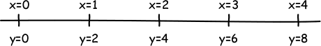
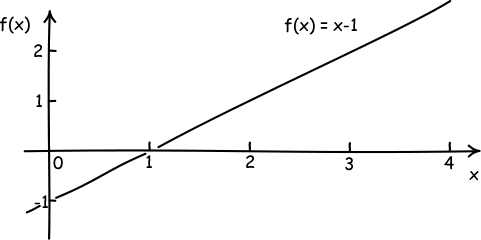
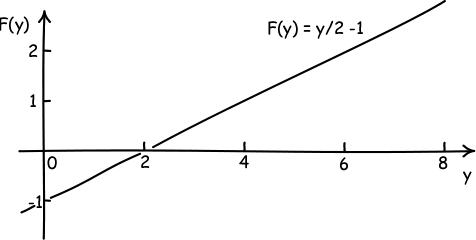
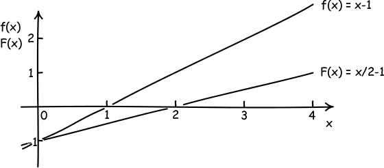
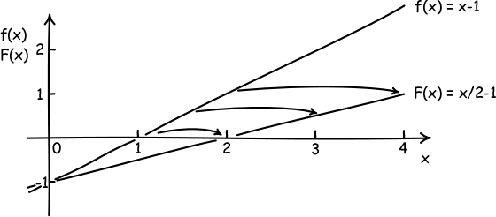

Supplement to The Hole Argument
Active and Passive Covariance
Its Importance for the Hole Argument
One of the more perplexing components of the hole argument is the transition from the general covariance of Einstein's theory to our freedom to spread the metric field with great freedom over the spacetime manifold. The transition is from what is known as a “passive” view of coordinate transformations to an “active” view. It goes something like this:
Passive view:
The laws of Einstein's theory are covariant under arbitrary coordinate transformations. That means that if we perform an arbitrary coordinate transformation, the laws stay the same in form. As a result we are free to use any coordinate transformation we like. If we have some metrical field described in some coordinate system, we can move to any other coordinate system we like and redescribe that same field in the new coordinate system.
The notion of “arbitrary” is mathematically rather imprecise. We need not linger to explicate the delicate matter of just what “arbitrary” may include. For it definitely includes coordinate transformations that are the identity outside some freely chosen neighborhood of the spacetime manifold and then come smoothly to differ from the identity only within. This is a passive form of a hole transformation.
Active view:
The formulae used to generate the above coordinate transformation can be used in a very different way. Say the coordinate transformation relabels the point (0,0,0,0) in the old coordinate system with the new label (1,1,1,1). We can also use that transformation within just one coordinate system in the active sense. Then the transformation is used to pick up whatever geometric structures live at the point (0,0,0,0) and redeposit them at the point (1,1,1,1) in the same coordinate sytem. This amounts to a different spreading of the geometrical structures over the spacetime.
The important fact is that, if the first spreading of geometrical structures satisfied the generally covariant laws of Einstein's theory, then so will the second spreading.
A Toy Example
This last conclusion—that the new spreading also satisfies Einstein's laws—will surely not be obvious. Rather than plod through the abstract considerations that show this, I will describe an example of the very same transition from passive to active transformations in a greatly simplified case. The essential manipulations are the same and can be followed much more easily.
To begin, consider the example of a scalar field f spread over a one dimensional manifold; that is, a real line with a coordinate x. The field will be represented by the function f(x) in this x-coordinate system. The field law of our simple theory is just
(AP1) d2f(x)/dx2 = 0
Covariance of the Field Equation
Consider the transformation to the new coordinate system
(AP2) y = 2x
This is just a relabeling with different coordinates of points in the same one-dimensional space, as shown in the figure:

We also assume that the field f transforms as a scalar, so that the field transforms as
F(y) = f(x).
(Say to yourself: “The value of the field F at the point with coordinate y in the new coordinate system is the same as value of the field f in the old coordinate system at point x.”)
It is easy to see that this law is covariant under the transformation to the new coordinate system. We have for the differential operators
d/dx = (dy/dx).(d/dy) = 2 (d/dy)
and thus
d2/dx2 = 4 (d2/dy2)
By a simple substitution of the differential operator and the scalar transformation rule F(y) = f(x) in (AP1) we arrive at
0 = d2f(x)/dx2 = 4 (d2F(y)/dy2)
which in turn entails
(AP3) d2F(y)/dy2 = 0
This establishes the covariance of the field law (AP1) under the coordinate transformation (AP2); the transformed field law (AP3) has the same form as the original field law (AP1).
Passive Transformation
Now let us consider a passive transformation of this field. A simple solution of field law (AP1) in the x coordinate system is
(AP4) f(x) = x − 1
If we transform this solution to the new coordinate system y by replacing f(x) by F(y) and x by y/2, we arrive at
(AP5) F(y) = y/2 − 1
This is just the same field as (AP4), but now described in the new coordinate system y. To get a sense of the sameness, note that the field (AP2) vanishes at the point x=1 in the x coordinate system. The field F(y) vanishes at the point y=2. These vanishings happen at the same point in space. It is the point that has coordinate x=1 in the x coordinate system and y=2 in the y coordinate system.
Active Transformation
Now comes the tricky part—pay attention! We have learned a useful mathematical fact through our generation of the field (AP5):
The field F(y) = y/2 − 1 solves the field law d2F(y)/dy2 = 0
This fact uses the variable “y” to designate the coordinate system. Forget for a moment that values of y indicate particular points in the one dimensional space. Just think of it as a mathematical fact about a real valued variable y and function F of it. The mathematical fact remains true if we rewrite it using the label “x” instead of “y” for the real variable. Then it says:
The field F(x) = x/2 − 1 solves the field law d2F(x)/dx2 = 0
This mathematic fact can be given a new physical interpretation. Let the variable “x” be the x coordinate of our original coordinate system. We have now discovered a new field in the original x coordinate system that also satisfies the field equation. That is, we now have the two fields in the original x coordinate system:
The field f(x) = x − 1 solves the field law d2f(x)/dx2 = 0The field F(x) = x/2 − 1 solves the field law d2F(x)/dx2 = 0

Lest there be any doubt that the two fields are different, note that they are both described in the same coordinate system x, but are different functions of x. The points at which they vanish are now different. f(x) vanishes at x=1 and F(x) vanishes at x=2.
What we have done is to use the covariance of the original field law (AP1) to generate a new solution of the field law (AP1). That new solution is generated by taking the field at a point in space with coordinate x and moving it to a new point in space with coordinate y = 2x in the same coordinate system.

This use of the transformation (AP2) y = 2x is an active use of the transformation.